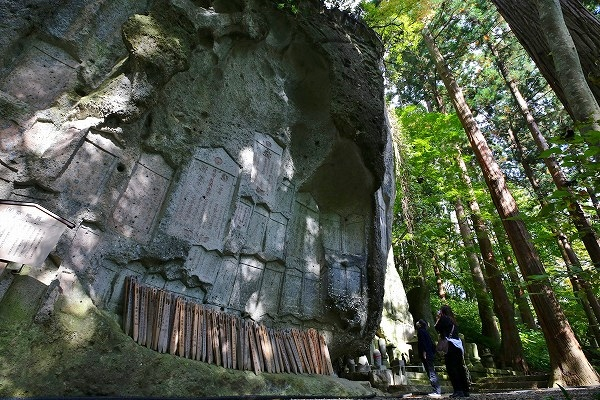
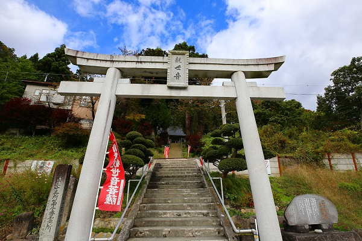

山形県紅葉ランキング第2位（どっかのサイト調べ）の
山寺、立石寺に行ってきたよ。
お目当てはモチロン紅葉！の筈だったが…。
紅葉が始まりかけた時期で、すっごく中途半端な感じでした…。
この立石寺、確か今回で3回目の訪問だ。
以前の訪問時のレポートは
こちら。
前回、前々回はムカサリ絵馬との出会いが強烈すぎて、そこにばかり気が回ってしまい他の部分を疎かにしていたような気がする。
なので今回はなるべくニュートラルな気持ちで山寺に接するように努めたつもり…なのだが…。
根本中堂や芭蕉の句碑、といった序盤のハイライトをこなし、山門をくぐり、いよいよ立石寺の中枢部へと足を踏み入れる。
姥堂には4体の石像が並んでいる。
姥神とは日本で広く信仰されている神様である。
特に東北地方で篤く信仰されていて、山形や福島では安産に御利益あり！として
女性から信仰されている神様なのだ。
恐らく前掛けの奥にはだらんと垂れた乳があるはずだ。
今では立膝は行儀の悪い姿勢とされているが、近年の研究でその概念は覆されつつあるようだ。
立膝の姿勢というのはは昔のお産の姿とも言われており、大河ドラマ「麒麟がくる」でも高貴な女性はみな立膝で座っている。
何となく姥神や奪衣婆って怖いとか偉そうというイメージが付きまとうが、これは近代の人間の思い込みなのかもしれない。
立石寺は今でこそ紅葉の名所、あるいは芭蕉の句で知られているが、昔から
死者の魂の行く場所としても有名な霊場だった。
今でも死者の遺髪や遺骨（の一部）を山寺に納めるという習俗が続いているという。
そんな死者の霊場、立石寺にはこのように岩を石塔状に陰刻したものが見られる。
これは
岩塔婆といい、室町から江戸中期辺りまで続いた死者供養の習俗である。
参道にたくさん後生車が付いた卒塔婆が供えられている。
これももちろん死者供養のためのものだ。
ちなみに卒塔婆の右側、階段が極端に狭くなっている部分は四寸道といい、上りと下りの人が互いに譲り合うので参拝者の渋滞が起こりがちだ。
訪れた日は紅葉シーズン＆GOTOトラベル期間＆地元の中学生の遠足もあってか、結構な人出だった。

見上げれば凄い絶壁。

岩塔婆の密集地帯。
どうやってこんなに沢山彫ったのだろう？
岩塔婆の下の方には大量の一円玉が埋め込まれていた。
何か執念のようなものを感じますね…。
…と、ここまでは谷筋に岩塔婆が林立する陰鬱な場所であったが、段々視界が開けてくる。
塔頭が連なり、その奥には山肌にポコポコと穴の開いた修験の修行場がある。
岩窟にインサートされたようなお堂などもあり、まるで山全体が複雑な盆景のようだ。
是非とも行ってみたいが、残念ながら行者しか行けないのである。
そうこうしている内に奥の院、大仏殿に着く。
ここもあと1週間もすれば真っ赤っ赤だったのかもしれない。
大仏殿内には大仏やムカサリ絵馬などがあるのだが、撮影禁止なので詳しい報告は差し控えさせていただきますよ。
奥の院からやや下がった場所にある三重小塔。国の重文である。
中身は兎も角、岩自体の存在感が凄い。
何かキングクリムゾンのジャケみたいな…（ハイ、
検索！）。
死者供養と修験場と観光が入り混じったカオスな場所だった。
さて。
ここからサブストーリーというか本題というか、な感じなんですけど。
ここまで紹介してきた立石寺とは全く別の、
もう一つの山寺が存在する事はあまり知られていない。
山寺の門前町を東に抜け10分ほど歩くと観光客の姿もほぼいなくなった辺りに鳥居が見えてくる。

最上三十三観音の札所である山寺
千手院の鳥居である。
お寺に鳥居？というツッコミはおいといて（東北ではしばしば仏教寺院に鳥居が建っているのだ）、この鳥居はマルカンの斎藤ひとり氏が奉納したものだとか。
鳥居に抱きつき何かを唱えると何かが何とかなるそうです…。
全然話が逸れるが日本中の寺社で斎藤ひとり氏の千社札ってよく見かけますよね？←これ寺社フリークあるある
関西ではミヤコ蝶々、関東では大山のぶ代と並んで斎藤ひとりの千社札をよく見かける。
あと私もよく行く千住の居酒屋永見の札とか。
そして何故か斎藤ひとり氏の隣にはしばしば
みっちゃん先生という千社札が貼られている。
斉藤氏の関係者なのだろうか。これ見つけると「あ〜！みっちゃん先生だ！」と妙にテンション上がるんだよなあ。何でだろう？＆誰なんだろう？
閑話休題。
鳥居を潜り、階段を上るとるといきなり線路が横たわっている。
仙台と山形を結ぶ仙山線である。
実にのどかな光景である。
さらに階段を上ると千手院というお寺がある。
ここは最上三十三観音の2番目の札所であり、札所名が山寺となっている。
山寺イコール立石寺、と考えがちだが必ずしもそうではない。
この千手院もまた山寺なのである。
堂内にはムカサリ絵馬や婚礼人形などが奉納されており、いかにも最上三十三観音の札所っぽい雰囲気に満ち溢れていた。
そして最上三十三観音といえばお約束の巡礼札。
ここにもバッチリ大量の札が貼られていました。
この奥に素敵な霊場が広がっているとの事。
墓地の脇にある小道から山に入っていった。
しばらく歩くと不思議な洞窟群が現れる。
沢山の細かい穴が開いており、
岩とは思えない有機的なマチエールをしている。
摩訶不思議な光景の中にポツンと鳥居が建っている。
何だか
地球外の星に鳥居が建っているかのような強烈な違和感。
ハチの巣、というかホルモンのハチノスみたいだ。
この辺りは
垂水遺跡と呼ばれている。
かつては修験の地だったという。
さらに少し奥に進むと
垂水不動尊という大きな岩の割れ目がある。
ここはかつて上から水が滴っていたそうだ（だから垂水）。
割れ目に引っかかっている大きな岩が落ちてきそうで、見上げているだけで何か不思議な感じ。
左の岩肌には千手観音が彫られていたというのだが、目を凝らしても良く判らなかった。
垂水不動尊のすぐ脇には浅い洞窟があり、円仁宿跡とされている。
円仁とは言うまでもなく天台密教の高僧にして立石寺の開祖、慈覚大師のことである。
慈覚大師は天台密教を広めた重要な人物である。
特に東北地方や関東地方の寺院を訪れると慈覚大師開基の寺伝にしばしば出会う。しかもみな立派な名刹ばかり。
そんな慈覚大師が寝泊まりした場所なのだという。
…とすれば山寺の「ゼロ地点」は立石寺ではなく、この垂水遺跡である、という事になろう。
まあ、これだけ奇妙な岩とかがあるのだから、それも不思議ではないような気もするが。
垂水遺跡から先には尾根伝いに烏帽子岩、楯岩、砦岩といった奇岩や巨石が次々と現れる。
先程渡って来た仙山線の線路が遥か下に見える。善き眺め也。
これは毘沙門天岩。
ここを過ぎると修験場という比較的開けた場所に出る。
岩窟に五輪塔の一部が見える。
鎌倉などで見るやぐらのようなものだろう。
五輪塔は鎌倉時代のものもあるそうだ。
この辺りは峯の裏（または峯の浦）とよばれ、近年の調査で多くの遺跡や礎石が出土したエリアだ。
かつては立石寺を凌ぐ寺院があったのかもしれない。
そうこうするうちに突如視界が開け、見たことのある風景が現れた。
当サイトでも既報の
山寺霊園である。
相変わらず水子地蔵にはたくさんの風車が供えられていた。
千手院からこの山寺霊園まで約1時間半。
立石寺に訪れた際は峯の裏も一緒に訪れてみてはいかがでしょうか。（←バイラルサイト的終わり方）